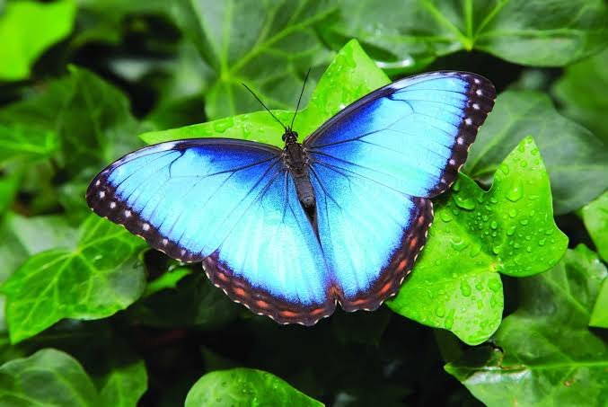
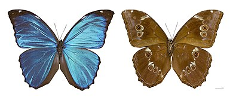
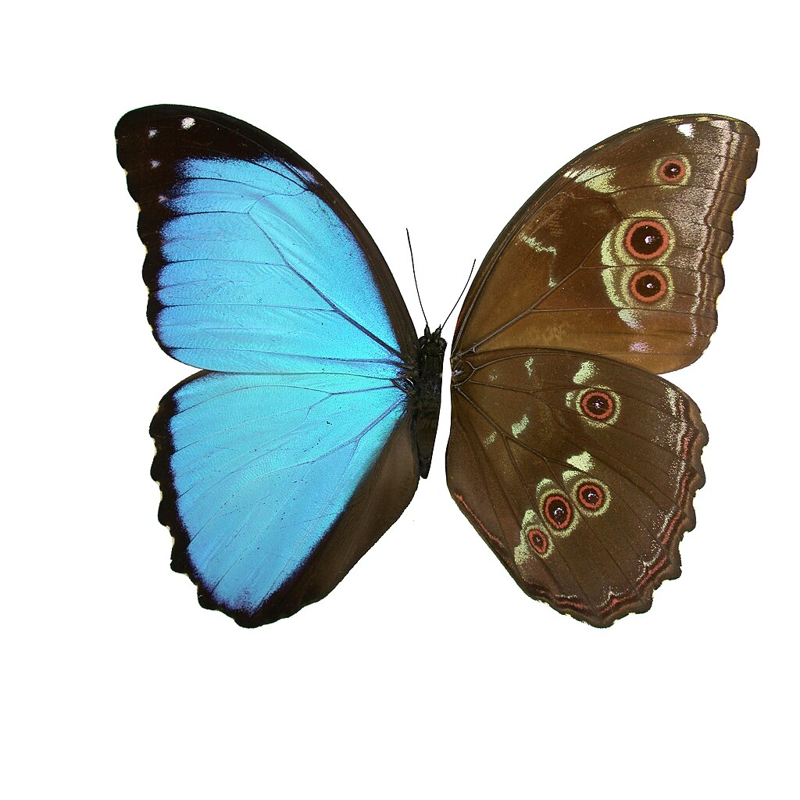

butterfly
Morpho Menelaus
The Menelaus blue morpho (Morpho menelaus) is one of thirty species of butterfly in the subfamily Morphinae.[1] Its wingspan is approximately 12 cm (4.7"), and its dorsal forewings and hindwings are a bright, iridescent blue edged with black, while the ventral surfaces are brown.[2] Its iridescent wings are an area of interest in research because of their unique microstructure.[3] Due to its characteristic blue color, Morpho menelaus is considered valuable among collectors and was widely hunted in the 20th century.
Behavior
 Attitude
Females inhabit the forest understory and perch on tree stumps, but are found near the tree tops when it is time to lay eggs.[1] Both sexes have a slow and floppy flight pattern and feed on rotting fruit that has dropped to the ground.[5] Males tend to fly in open clearings or high in the canopy.[7] These butterflies collectively emerge in the beginning and the end of the wet season in Cerrado.[5] They do not appear in the middle of the wet season because the heavy rain can cause physical harm to their wings. Their emergence depends on the availability of food which is dependent on climate.[5] For protection from the rain, Morpho menelaus prefers small and enclosed spaces.
| Feature | Description |
|---|---|
| Common Name | Blue Morpho |
| Scientific Name | Morpho Menelaus |
| Family | Nymphaliae |
| Habitat | Rainforces of central and south America |
| Wingspan | 12-15cm |